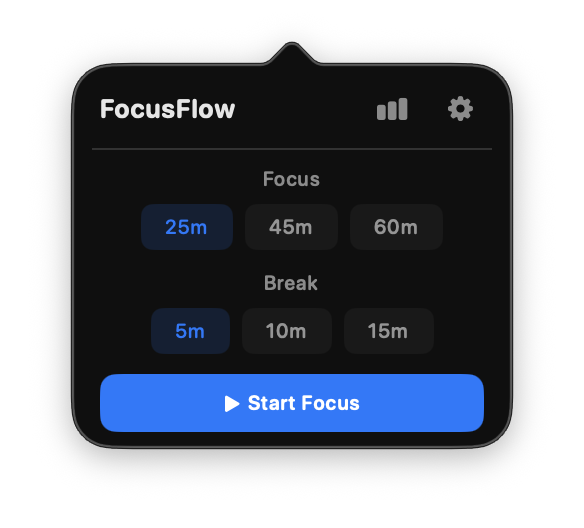
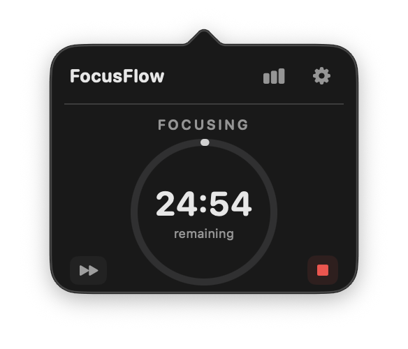
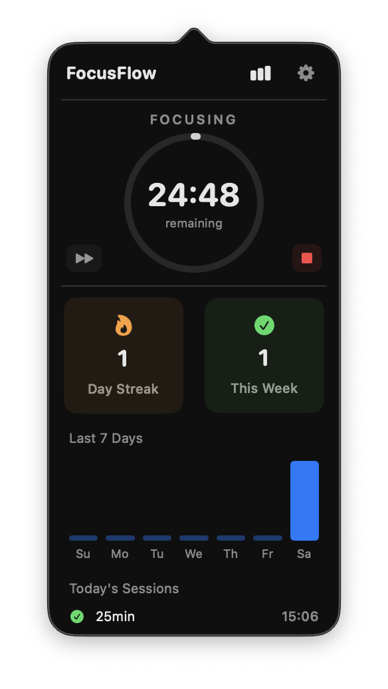
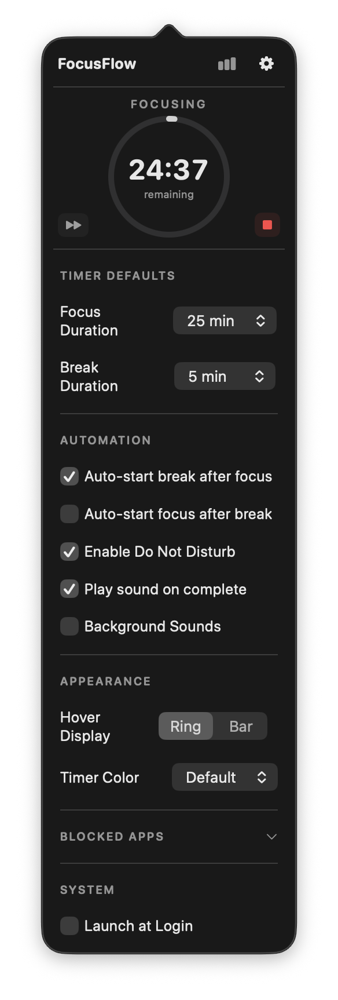

Overview
FocusFlow is a macOS menu bar application that manages focus sessions end-to-end. Starting a session doesn't just begin a countdown — it activates Do Not Disturb, hides distracting applications, and optionally enables background sounds. Ending a session restores everything.
Most Pomodoro apps are just timers. The actual work of focusing — silencing notifications, closing Twitter, putting your phone down — is left to you. FocusFlow automates the environment so the timer is the last thing you think about, not the first.
Why I Made This
Starting a focus session on macOS involves multiple manual steps: turning on Do Not Disturb in Control Center, closing distracting apps, opening a timer, and remembering to undo it all when you're done. Each step is friction, and friction kills the habit.
I wanted one click in the menu bar that handles all of it. Start focus, the Mac adapts. End focus, it restores. The same design philosophy as Battery Hub — consolidating scattered system controls into a single, focused interface.
User Experience
The app lives in the menu bar with a minimal icon that changes based on session state: a target when idle, a filled circle when focusing, a leaf during breaks. During active sessions, the remaining time appears next to the icon.
Hovering over the icon shows a compact floating timer — either a circular ring or a horizontal bar, depending on the user's preference. Clicking opens the full popover with session controls, and the stats and settings panels expand inline below the timer without replacing it.
The idle view presents focus and break duration pickers with a single “Start Focus” button. During a session, the countdown is displayed inside a progress ring with skip and stop controls. The stats panel shows streak data, a 7-day bar chart, and today's completed sessions.
Key Features
- Pomodoro timer — configurable focus sessions (25, 45, or 60 minutes) and breaks (5, 10, or 15 minutes) with auto-chaining. Skip to break, extend breaks, or end sessions early.
- Do Not Disturb integration — automatically activates a macOS Focus mode when a session starts and deactivates it when it ends. Uses Apple Shortcuts for reliable system integration with an AppleScript fallback.
- App blocking — hides user-defined distracting applications via NSWorkspace when a session begins and restores them when it ends. Configured through an in-app picker that lists running applications.
- Background sounds — optionally triggers macOS background sounds (rain, ocean, etc.) during focus sessions via Shortcuts automation.
- Session tracking — persists every completed session with timestamps and duration. Tracks daily streaks, weekly session counts, and focus time totals.
- Stats dashboard — inline expandable panel showing current streak, this week's sessions, a 7-day focus bar chart, and today's session log. Never replaces the timer view.
- Hover display — floating mini-timer appears on mouse hover over the menu bar icon. Two modes: circular ring or horizontal bar, matching the user's preference.
- Menu bar state — dynamic icon (target/circle/leaf) and countdown text with configurable colour (default, accent, or green). Changes in real time as sessions progress.
Screenshots





Technical Architecture
Built with Swift and SwiftUI targeting macOS 13+. The app uses AppKit for menu bar integration and Combine for reactive state propagation across services and views.
The AppDelegate acts as the central orchestrator, subscribing to TimerService state changes via Combine and triggering side effects: activating DND through FocusService, hiding apps through AppBlockerService, and sending notifications through NotificationService. The popover UI is SwiftUI hosted inside AppKit's NSPopover, with a separate NSPanel for the hover window. All settings use @AppStorage for automatic UserDefaults persistence.
Reflections
The most interesting challenge was the Do Not Disturb integration. Apple doesn't expose a public API for controlling Focus modes programmatically — the solution was to invoke user-created Shortcuts from the app via the command line, with an AppleScript fallback. It's a pragmatic workaround that works reliably while staying within Apple's intended automation patterns.
App blocking through NSWorkspace was more straightforward but surfaced edge cases around app lifecycle: what happens if a blocked app is relaunched during a session, or if the user manually quits FocusFlow mid-session? Handling these gracefully required careful state management in the AppDelegate.
Building this alongside Battery Hub reinforced the value of a consistent design language across the series. The popover layout, expandable settings panel, hover interaction, and menu bar rendering all follow the same patterns — which made development faster and keeps the tools feeling like a cohesive suite.